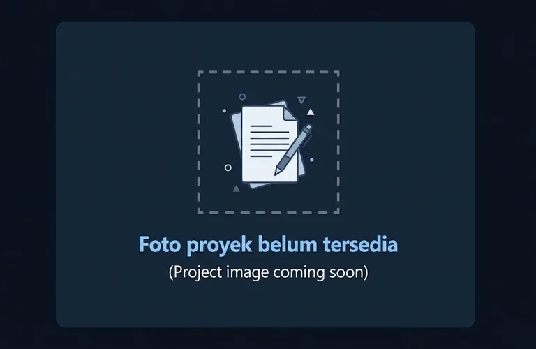

01 · DESAIN
01
DESAIN
Poster Edukasi
Desain poster dengan gaya visual modern untuk kebutuhan promosi dan edukasi digital.
KUMPULAN KARYA
Berikut adalah beberapa hasil desain grafis, poster, dan infografis yang saya buat menggunakan Canva.

01 · DESAINDesain poster dengan gaya visual modern untuk kebutuhan promosi dan edukasi digital.
Karya visual untuk feed Instagram, poster promosi, dan materi branding yang lebih menarik.
Visual data dan informasi yang dibuat agar lebih mudah dipahami dan lebih menarik secara estetika.
Desain event banner dengan komposisi visual yang kuat untuk menarik perhatian audiens.